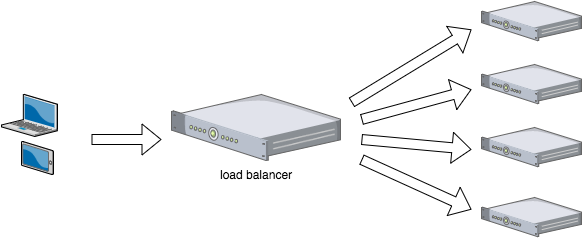

系统扩展方式：
Scale UP：向上扩展,增强
Scale Out：向外扩展,增加设备，调度分配问题，Cluster
目前关于网站架构一般比较合理流行的架构方案
Web 前端采用 Nginx/HAProxy+Keepalived 作负载均衡器；
后端采用 MySQ L数据库一主多从和读写分离，采用 LVS+Keepalived 的架构
集群介绍
集群,为解决某个特定问题将多台计算机组合起来形成的单个系统，这些单个的计算机系统就是集群的节点（node）
特点：
1.可扩展性。集群的性能不限于单一的服务实体，新的服务实体可以动态的加入到集群，从而增强集群的性能。
2.高可用性。当发生单节点服务故障时，单台服务器上所运行的应用程序将在另一节点服务器上被自动接管。消除单点故障对于增强数据可用性、可达性和可靠性是非常重要的。
3.负载均衡。负载均衡能把任务比较均匀的分布到集群环境下的计算和网络资源，以便提高数据吞吐量。
4.错误恢复。如果集群中的某一台服务器由于故障或者维护需要而无法使用，资源和应用程序将转移到可用的集群节点上。
类型：
LB：Load Balancing，负载均衡
HA：High Availiablity，高可用，SPOF（single Point Of failure）
HPC：High-performance computing，高性能计算系统
LB
通过不同的调度机制将用户的请求分派到后端不同的服务器。缓解服务器的请求压力
负载均衡（Load Balance，缩写LB）是一种网络技术，它在多个备选资源中做资源分配

参考OSI模型用四层负载均衡、七层负载均衡进行分类
四层负载均衡
1.工作在OSI的四层 2.不管数据包是什么，只是通过修改IP头部或者以太网头部的地址实现负载均衡
通过修改网络数据包“中转”请求；一般工作在操作系统的内核空间（kernel space），比如通过Linux的netfilter定义的hook改变数据包
七层负载均衡
1.工作在OSI的七层，支持应用层协议
2。一般会把数据包内容解析出来后通过一定算法找到合适的服务器转发请求。它是针对某个特定协议所以不通用。比如Nginx只能用于HTTP而不适用于Mysql。
3.必须解析出数据包的内容，根据内容来做相关的转发（比如做Mysql的读写分离），一般工作在用户空间（user space），比如通过Nginx、Mysql Proxy、Apache它们都是实现某个具体协议，也叫做代理(Proxy)
实现方式：
硬件
F5 Big-IP
Citrix Netscaler
A10
软件
lvs：Linux Virtual Server ，工作在网络4层
nginx：支持TCP（四层）和HTTP（七层）调度，阿里七层SLB使用Tengine
haproxy：支持七层(mode http) 四层(mode tcp)
ats：apache traffic server，yahoo捐助
perlbal：Perl 编写
pound
基于工作的协议层次划分：
传输层（通用）：DPORT
LVS：
nginx：stream
haproxy：mode tcp
应用层（专用）：针对特定协议，自定义的请求模型分类
proxy server：
http：nginx, httpd, haproxy(mode http), ...
fastcgi：nginx, httpd, ...
mysql：mysql-proxy, ...
会话保持：负载均衡
(1) session sticky：同一用户调度固定服务器
Source IP：LVS sh算法（对某一特定服务而言）
Cookie
(2) session replication：每台服务器拥有全部session
session multicast cluster
(3) session server：专门的session服务器
Memcached，Redis
负载均衡集群设计时要注意的问题：
(1) 是否需要会话保持；
(2) 是否需要共享存储；
共享存储：NAS， SAN， DS（分布式存储）
LVS、Nginx、HAProxy对比
HA
高可用集群是用于单点故障，能够自动将资源、服务进行切换另一个节点能够自动且立即向外提供服务，这样可以保证服务一直在线。在这个过程中，对于客户端来说是透明的。
用平均无故障时间（MTTF）来衡量系统的可靠性，用平均维护时间（MTTR）来衡量系统的可维护性
定义：
MTBF:Mean Time Between Failure 平均无故障时间
MTTR:Mean Time To Restoration（ repair）平均恢复前时间
HA=MTBF/（MTBF+MTTR）
99%：表示 一年宕机时间不超过4天
99.9% ：表示一年宕机时间不超过10小时
99.99%： 表示一年宕机时间不超过1小时
99.999% ：表示一年宕机时间不超过6分钟
实现高可用集群有三种方式
1.主从方式（非对称）
包含2个节点和一个或多个服务器，一台作为主节点（active），另一台作为备份节点（standy）。备份节点随时都在检测主节点的健康状况，当主节点发生故障时，服务会自动切换到备份节点上以保证服务正常运行
2.对称方式
包含2个节点和一个或多个服务，其中每一个节点都运行着不同的服务且相互作为备份，两个节点互相检测对方的健康状况，这样当其中一个节点发生故障时，该节点上的服务会自动切换到另一个节点上去。
3.多机方式
包含多个节点和多个服务。每一个节点都可能运行和不运行服务，每台服务器都监视着几个指定的服务，当其中的一个节点发生故障时，会自动切换到这组服务器中的一个节点上去
实现高可用集群需要用到的组件：
HPC
分布式
分布式结构就是将一个完整的系统，按照业务功能，拆分成一个个独立的子系统，在分布式结构中，每个子系统就被称为“服务”。
分布式存储：云盘
分布式计算：hadoop，Spark
集群与分布式对比
集群：同一个业务，部署在多个服务器上 。
分布式：一个业务拆分为多个子业务，部署在多个服务器上
联系与区别：
1.分布式是指将不同的业务分布在不同的地方
2.集群可能运行着一个或多个分布式系统，也可能根本没有运行分布式系统
3.将一套系统拆分成不同子系统部署在不同服务器上（这叫分布式），然后部署多个相同的子系统在不同的服务器上（这叫集群），部署在不同服务器上的同一个子系统应做负载均衡
4.集群是个物理形态:
逻辑上处理同一任务的机器集合，可以属于同一机房，也可分属不同的机房:
分布式是个工作方式:
可以运行在某个集群里面，某个集群也可作为分布式概念的一个节点,而集群并不一定就是分布式的
集群类型：
LB集群：负载均衡集群
四层 lvs，nginx(stream)，haproxy(mode tcp)
七层 nginx，haproxy(mode http)，varnish(diectors modules)
HA集群：高可用性集群
SPoF: Single Point of Failure
核心特性：通过冗余方式，为活动设备提供备用设备，在活动设备出现故障时，备用设备能够上线并取代活动设备成为新的活动设备，即组合多台主机完成一个核心目标所构建出来的集群
HP集群：高性能计算集群
综合多台计算机的能力，解决复杂问题
系统可用性的公式：A=MTBF/（MTBF+MTTR）
MTBF(Mean Time Between Failure)：平均无故障时间
MTTR(Mean Time To Restoration)：平均修复(故障)时间
(0,1), 95%
几个9（指标）: 99%, ..., 99.999%，99.9999%；
系统故障：
硬件故障：设计缺陷、wear out（损耗）、自然灾害……
软件故障：设计缺陷
提升系统高用性的解决方案：
提升MTBF 平均无故障时间增大，即硬件设备故障率降低
与设备厂商有关，x86服务器故障率较高
降低MTTR 平均修复(故障)时间降低
提供备用服务器，其配置和主服务器相同，使用应用程序监控设备是否出现故障，一旦出现故障，就自动使用备用服务器替换主服务器
手段：设备冗余redundant
active/passive 主备
active/active 双主
active --> HEARTBEAT --> passive
active <--> HEARTBEAT <--> active
注意：活动主机为active，备用主机为passive
活动主机通过单播，多播或组播方式向其他主机发送心跳信息，如果其他主机在一定周期内没有收到活动主机的心跳信息，就认为活动主机出现故障，备用主机就取代活动主机成为活动主机
高可用的是“服务”：
HA nginx service：
vip/nginx process[/shared storage]
资源：组成一个高可用服务的“组件”
(1) passive node的数量
(2) 资源切换
提供(构建高可用)服务的关键因素:
ip地址：进入服务器的接口。
如果使用固定ip地址提供服务，那么备用主机则必须能够拿到该固定ip才能够在活动主机故障后成为活动主机
process：用户空间的进程对客户端提供服务
相对于ipvs来说，没有进程的说法，仅是内核空间的规则
storage：数据同步问题
对于mysql数据库来说，主备只能解决设备问题，备用服务器无法获取数据库中的数据，因此需要解决数据同步的问题
数据同步：
主从复制：使用软件或某个服务脱离于系统本身，对数据进行数据主从复制完成数据同步
rsync_inotify 文件级同步
drbd kernel2.6.33 分布式复制块设备
在不安装第三方软件，基于内核模块的情况下，把两个主机之上的两个磁盘或磁盘分区做成跨主机的镜像设备，
当在其中一块磁盘写入数据时，会同步到另外一块镜像磁盘上，实现数据同步的功能，系统可用性最高达到99.5%
提供(构建高可用)服务的关键因素:
ip地址：进入服务器的接口。
如果使用固定ip地址提供服务，那么备用主机则必须能够拿到该固定ip才能够在活动主机故障后成为活动主机
process：用户空间的进程对客户端提供服务
相对于ipvs来说，没有进程的说法，仅是内核空间的规则
storage：数据同步问题
对于mysql数据库来说，主备只能解决设备问题，备用服务器无法获取数据库中的数据，因此需要解决数据同步的问题
数据同步：
主从复制：使用软件或某个服务脱离于系统本身，对数据进行数据主从复制完成数据同步
rsync_inotify 文件级同步
drbd kernel2.6.33 分布式复制块设备
在不安装第三方软件，基于内核模块的情况下，把两个主机之上的两个磁盘或磁盘分区做成跨主机的镜像设备，
当在其中一块磁盘写入数据时，会同步到另外一块镜像磁盘上，实现数据同步的功能，系统可用性最高达到99.5%
shared storage：
NAS：文件共享服务器；
SAN：存储区域网络，块级别的共享
注意：NAS和SAN二者要求不同，NAS属于文件级别的存储设备，SAN属于块级别存储设备，二者的区别在于后端主机之上是否有操作系统，是否能够对多个节点同时对同一个文件施加读写操作时，自动维持文件锁。
另外，块设备后端服务器无法维持文件锁，需要前端调用者来维持，如果两个节点写同一个文件，会导致文件系统崩溃
Network partition：网络分区
网络分区：由于硬件设备故障而导致节点之间无法连接，出现网络不同的区域。
一旦出现网络分区，能够代表集群继续工作的网络分区小群体中的节点成员数量必须大于原集群成员节点的一半，在大于半数的网络分区中选举主节点和备用节点
quorum：法定人数
with quorum： > total/2
without quorum: <= total/2
隔离设备： fence
node：STONITH = Shooting The Other Node In The Head，断电重启
资源：断开存储的连接
TWO nodes Cluster
辅助设备：ping node, quorum disk
Failover：故障切换，即某资源的主节点故障时，将资源转移至其它节点的操作
Failback：故障移回，即某资源的主节点故障后重新修改上线后，将之前已转移至其它节点的资源重新切回的过程
HA Cluster实现方案:
ais：应用接口规范 完备复杂的HA集群
RHCS：Red Hat Cluster Suite红帽集群套件
heartbeat
corosync
vrrp协议实现：虚拟路由冗余协议
keepalived